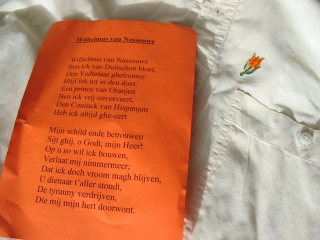

30 April

Omdat het koniginnedag was, gaf de ambassadeur een receptie in zijn residentie, waarvoor alle Nederlanders waren uitgenodigd. Zijn huis was afgeladen, en het was leuk weer eens zoveel Nederlands te horen. Iedereen kreeg bij binnenkomst een oranje tulpje opgespeld en er werd zelfs het wilhelmus gezongen...Later kwamen er naas veel ouderen ook nog wat studenten, waarvan er een donderdag jarig was en ik werd meteen uitgenodigd voor het feest. Daar zelfs iemand uit Bunnik!! ontmoet. Helaas had ik geen camera mee, maar echte foto's komen nog.
25 April
 Nadat ik een fiets van een collega geprobeerd heb, besloten om er zelf maar een te kopen. Het is 40 minuten fietsen van huis naar werk, en dat is exact even lang als in een overvolle bus (met wachten en naar halte lopen meegerekend). Fietsen is leuker.
Nadat ik een fiets van een collega geprobeerd heb, besloten om er zelf maar een te kopen. Het is 40 minuten fietsen van huis naar werk, en dat is exact even lang als in een overvolle bus (met wachten en naar halte lopen meegerekend). Fietsen is leuker.
24 April
 Greg heeft mij vandaag een rondleiding door Sydney gegeven. Na zo'n 280 Km rijden was het mooi weer in Sydney (in tegenstelling tot Canberra die dag), en heb ik een aantal beroemde dingen in Sydney gezien. Op de foto sta ik voor het Opera House. Meer foto's op de fotopagina.
Greg heeft mij vandaag een rondleiding door Sydney gegeven. Na zo'n 280 Km rijden was het mooi weer in Sydney (in tegenstelling tot Canberra die dag), en heb ik een aantal beroemde dingen in Sydney gezien. Op de foto sta ik voor het Opera House. Meer foto's op de fotopagina.
22 April
 Vanuit de achtertuin maar eens geprobeerd of ik die sterrenhemel op de foto kon krijgen. Het is een beetje gelukt, maar ik laat het toch maar zien.
Vanuit de achtertuin maar eens geprobeerd of ik die sterrenhemel op de foto kon krijgen. Het is een beetje gelukt, maar ik laat het toch maar zien.
21 April
 Deze zonsondergang die ik op de terugweg naar huis zag was weer erg mooi.
Deze zonsondergang die ik op de terugweg naar huis zag was weer erg mooi.
19 April
 Dit is dus het uitzicht vanaf mijn buro.
Dit is dus het uitzicht vanaf mijn buro.
18 April
 Op dit meertje dat ik zag in Tuggeranong, een van de suburbs van Canberra, werd geraced met heel snelle miniboten.
Op dit meertje dat ik zag in Tuggeranong, een van de suburbs van Canberra, werd geraced met heel snelle miniboten.Verder ben ik in een winkelcentrum kroketten tegengekomen.
17 April
 En Tysen (naar Mike, de Boxer), de hond die zich erg thuisvoelt op de veranda waar hij eigenlijk niet mag komen.
En Tysen (naar Mike, de Boxer), de hond die zich erg thuisvoelt op de veranda waar hij eigenlijk niet mag komen.
16 April
 Op verzoek: dit is een van de poezen, Mau.
Op verzoek: dit is een van de poezen, Mau.
15 April
Een barbeque gehad met een boel collega's. Het was een beerhoorlijk internationaal gezelschap met: 1 Zweedse, 2 Fransen, 5 Duitsers, 4 Australiers en ik. Helaas geen foto's.13 April
 Vanaf vandaag kan ik eindelijk weer mailen vanaf mijn eigen computer. Geen verloren replys meer dus. Het enige vervelende is dat alle replys vanaf mijn UU adres zullen komen. Ontvangen via HCCnet lukt wel, dus daar kan gewoon mail heen gestuurd worden.
Vanaf vandaag kan ik eindelijk weer mailen vanaf mijn eigen computer. Geen verloren replys meer dus. Het enige vervelende is dat alle replys vanaf mijn UU adres zullen komen. Ontvangen via HCCnet lukt wel, dus daar kan gewoon mail heen gestuurd worden.
12 April
 Na een goede nachtrust ben ik naar het reptielenmuseum gebracht, alwaar ik een aardige collectie slangen en hagedisachtigen heb bewonderd. De eigenaar was er helemaal bezeten van en omdat het in het begin vrij rustig was heb ik een soort van priverondleiding van hem gekregen. Erg leuk en leerzaam. Er blijken hier in de omgeving slechts twee soorten slangen voor te komen. Beide soorten zijn erg schuw en gaan mensen uit de weg. Wel zijn ze behoorlijk giftig.
Na een goede nachtrust ben ik naar het reptielenmuseum gebracht, alwaar ik een aardige collectie slangen en hagedisachtigen heb bewonderd. De eigenaar was er helemaal bezeten van en omdat het in het begin vrij rustig was heb ik een soort van priverondleiding van hem gekregen. Erg leuk en leerzaam. Er blijken hier in de omgeving slechts twee soorten slangen voor te komen. Beide soorten zijn erg schuw en gaan mensen uit de weg. Wel zijn ze behoorlijk giftig.
11 April
 Vandaag was ik uitgenodigd om bij Arnold en zijn gezin te komen eten. Ze wonen in een mooi, grotendeels door de zon verwarmd, huis met oa ook een eigen watervoorziening net over de grens met New South Wales. Op hun enorme stuk land komen geregeld hele groepen kangaroes grazen en de pas geplante boompjes platstampen...
Vandaag was ik uitgenodigd om bij Arnold en zijn gezin te komen eten. Ze wonen in een mooi, grotendeels door de zon verwarmd, huis met oa ook een eigen watervoorziening net over de grens met New South Wales. Op hun enorme stuk land komen geregeld hele groepen kangaroes grazen en de pas geplante boompjes platstampen...Na een overheerlijke maaltijd hebben we naar een schitterende sterrenhemel gekeken, die hier nog niet verpest wordt door stadslicht. Zelfs een paar vallende sterren gezien. Ook weet ik nu hoe de dodelijke (als je domme dingen doet) "redback" spin eruit ziet. Hier is het dus echt stil en echt donker 's nachts.
10 April
 Een rustige dag en dus maar eens in de omgeving rondgewandeld. De weinige mensen die je in deze parkachtige stad tegenkomt willen meteen van alles weten en uitleggen. Zo weet ik nu bijvoorbeeld precies tot waar de bosbranden van vorig jaar zijn gekomen. Moet enorm zijn geweest. Zo nu en dan kom je ook de meest bijzondere (tenminste, dat zijn ze nu nog voor mij) vogels tegen.
Een rustige dag en dus maar eens in de omgeving rondgewandeld. De weinige mensen die je in deze parkachtige stad tegenkomt willen meteen van alles weten en uitleggen. Zo weet ik nu bijvoorbeeld precies tot waar de bosbranden van vorig jaar zijn gekomen. Moet enorm zijn geweest. Zo nu en dan kom je ook de meest bijzondere (tenminste, dat zijn ze nu nog voor mij) vogels tegen.
9 April
 Op goede vrijdag een rondleiding gehad langs een paar toeristische attracties hier. Om te beginnen zijn we langs Lake Burley Griffin gewandeld, waarna we het oude en nieuwe parlementsgebouw bezocht hebben. Voor het oude parlementsgebouw is al tijden een illegaal, maar gedoogd tentenkamp ingericht waarin door Aboriginals gedemonstreerd wordt tegen hun onderdrukking. Dit komt vreemd genoeg nooit in het nieuws...
Op goede vrijdag een rondleiding gehad langs een paar toeristische attracties hier. Om te beginnen zijn we langs Lake Burley Griffin gewandeld, waarna we het oude en nieuwe parlementsgebouw bezocht hebben. Voor het oude parlementsgebouw is al tijden een illegaal, maar gedoogd tentenkamp ingericht waarin door Aboriginals gedemonstreerd wordt tegen hun onderdrukking. Dit komt vreemd genoeg nooit in het nieuws...Aan het eind van de dag hebben we op Telstra Tower, het hoogste uitzichtspunt bovenop Black Mountain, genoten van de zonsondergang.
3 April
 Vandaag eens eindelijk niet vergeten om voor het donker worden een foto van het huis te maken waarin ik samen met Anna en Greg woon. Zoals je ziet is er een boel groen, waardoor het huis en de huizen eromheen vanaf de straat nauwelijks te zien zijn. Vanaf de foto zou het evengoed een lemen hut kunnen zijn ja, maar het is van alle gemakken voorzien zoals bijvoorbeeld ook airconditioning. Op de fotopagina is ook een foto te zien vanaf het balkon.
Vandaag eens eindelijk niet vergeten om voor het donker worden een foto van het huis te maken waarin ik samen met Anna en Greg woon. Zoals je ziet is er een boel groen, waardoor het huis en de huizen eromheen vanaf de straat nauwelijks te zien zijn. Vanaf de foto zou het evengoed een lemen hut kunnen zijn ja, maar het is van alle gemakken voorzien zoals bijvoorbeeld ook airconditioning. Op de fotopagina is ook een foto te zien vanaf het balkon.Een korte wandeling bracht me al in een park waar af en toe geen huis om me heen te zien was. En dan te bedenken dat ik in een stad woon! Nog geen eng beest gezien trouwens. Het heeft al lang niet meer geregend, waardoor er er in de omgeving geen groen sprietje gras meer te bekennen is.
2 April
Alleen maar met de bus naar het centrum van Canberra geweest om buskaart, bankrekening en een simkaart te kopen. Dat was allemaal gelukt, maar op de terugweg miste ik de bushalte en moest een half uur teruglopen... Geen dingen die echt interessant waren om te fotograferen gezien.1 April
 Aangekomen op de plaats van bestemming, na eerst nog een paar uur door Sydney te zijn gelopen (voor de trein vertrok). Daar hebben ze dus alleen op het eerste kruispunt dat je vanuit het station tegenkomt aanwijzingen staan voor het uitkijken: Look Left, Look Right, daarna moet je het zelf maar weten. Flink wennen toch. De tijd was te kort om de hele stad te bekijken en verder dan Darling Harbour ben ik niet gekomen. Temperatuur was ook niet misselijk voor als je met een winterjas aan aankomt: 25 graden. Zelfs de douanedame moest er wat van zeggen...
Aangekomen op de plaats van bestemming, na eerst nog een paar uur door Sydney te zijn gelopen (voor de trein vertrok). Daar hebben ze dus alleen op het eerste kruispunt dat je vanuit het station tegenkomt aanwijzingen staan voor het uitkijken: Look Left, Look Right, daarna moet je het zelf maar weten. Flink wennen toch. De tijd was te kort om de hele stad te bekijken en verder dan Darling Harbour ben ik niet gekomen. Temperatuur was ook niet misselijk voor als je met een winterjas aan aankomt: 25 graden. Zelfs de douanedame moest er wat van zeggen...Voor de treinreis moest de koffer nog even opnieuw ingericht worden omdat die maar liefst 1.6 kg zwaarder dan 20 kg was. Dat was ook meteen de enige Australier die ik tegengekomen ben die niet heel gemakkelijk was.
 Na aankomst ben ik opgehaald en heb ik meteen een rondleiding bij CSIRO gekregen, waarna ik op mijn nieuwe woonadres ben afgeleverd. Voor foto's van de buitenkant was het al te donker, dus hierbij alleen een foto van mijn nog niet helemaal opgeruimde kamer.
Na aankomst ben ik opgehaald en heb ik meteen een rondleiding bij CSIRO gekregen, waarna ik op mijn nieuwe woonadres ben afgeleverd. Voor foto's van de buitenkant was het al te donker, dus hierbij alleen een foto van mijn nog niet helemaal opgeruimde kamer.
31 Maart
 Na een lange vlucht naar Tokyo mocht ik ook nog eens zeven uur lang wachten op de aansluiting naar Sydney. Voordeel is dan wel dat je kunt gaan zitten wachten tot de zon mooi door de wolken schijnt. Bij vertrek overigens stromende regen.
Na een lange vlucht naar Tokyo mocht ik ook nog eens zeven uur lang wachten op de aansluiting naar Sydney. Voordeel is dan wel dat je kunt gaan zitten wachten tot de zon mooi door de wolken schijnt. Bij vertrek overigens stromende regen.
30 Maart
 Dit is zo'n beetje wat ik zag tijdens de vlucht naar Tokyo (zolang het dag was dan). Neem trouwens nooit een Japase vliegtuigmaaltijd.
Dit is zo'n beetje wat ik zag tijdens de vlucht naar Tokyo (zolang het dag was dan). Neem trouwens nooit een Japase vliegtuigmaaltijd.
29 Maart
 Alles is ingepakt voor de reis morgen. Natuurlijk was de koffer zwaarder dan de toegestane 20 kg en moet ik helaas het een en ander thuislaten. De zak drop dus ook...
Alles is ingepakt voor de reis morgen. Natuurlijk was de koffer zwaarder dan de toegestane 20 kg en moet ik helaas het een en ander thuislaten. De zak drop dus ook...